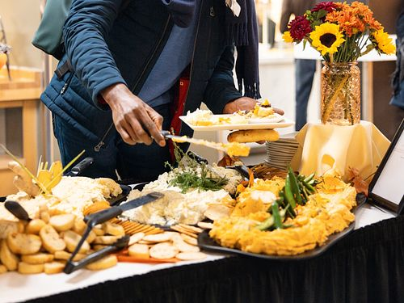
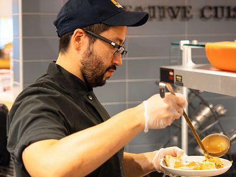
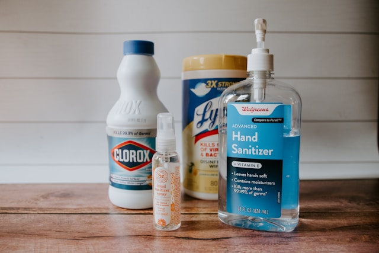
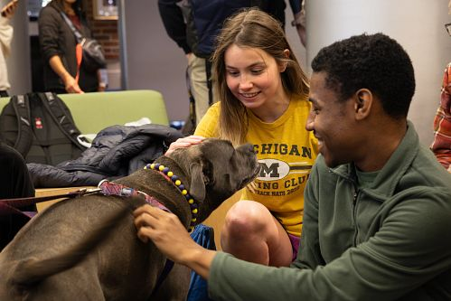

Our Mission
To ensure members of the University of Michigan community—whether on a tight budget or physically restrained from getting to a grocery store—receive equitable access to healthy, nutritious, and nourishing food and the ability to prepare it for themselves or others.

Make an Appointment Now
Shopping at the Maize and Blue Cupboard is by appointment only.
Sign up here.
Who We Are
College students and staff are experiencing food insecurity at alarming rates. The Maize and Blue Cupboard is here to provide an immediate and comprehensive response for the U-M community. By offering resources, educational opportunities, compassionate support and more, we help students develop the skills to make informed decisions.
Read our FAQs to learn more about the Maize and Blue Cupboard and how you can get help.
What We Provide

Food
Produce, dairy, meat, brad, frozen and shelf-stable foods (i.e rice, cans, tuna, etc.)

Kitchen & Cooking
Dishes, silverware, pots & pans, Tupperware, cutting boards, knives, and other kitchenware

Personal & Household
Trash bags, toilet paper, cleaning supplies, hygiene products, school supplies, baby items and more.

Support
Get connected to campus experts like CAPS, Dean of Students and Financial Aid, as well as SNAP (Michigan’s food program)
How to Help
Your aid can make a difference in a student's life. If you'd like to support our mission, we have many ways you can help, including:
Money
Find out more.
We have four options for monetary donations. Each one will help us buy food for a student in need.
Deborah and Steve Rosenthal Family Fund
This endowed fund ensures your gift is sustainable over time and supports the work of the Maize and Blue Cupboard – assisting students with food insecurity so that they can thrive during their time at the University.
Donate Today
Maize and Blue Cupboard Endowment Fund
These funds will be used for long-term projects and sustainability programs. Gifts to this endowed fund will provide crucial support to students struggling with hunger and food insecurity.
Donate Today
Maize and Blue Cupboard Fund
Donating to this fund will ensure your dollar goes further immediately. Maize and Blue Cupboard is a food pantry that provides crucial support to students struggling with hunger and food insecurity. It’s hard to get a full ‘Michigan Education’ if you’re worrying about where your next meal is coming from. Funds are used to help purchase food, student programming, and facility use.
Donate Today
Strong Enough for All Fund
Gifts to this endowed fund support the critical and immediate needs of students at the Maize and Blue Cupboard. The Maize and Blue Cupboard provides students experiencing food insecurity with healthy food and personal products which improve their overall Michigan experience.
Donate Today
Time
Find Out More
Volunteers are always welcome. Anyone can help, no experience is necessary, and you can sign up for a shift that works with your schedule. If you wish to host a drive, please contact us to see what the Maize & Blue Cupboard currently needs.
Volunteer at Maize and Blue Cupboard
Host a Donation Drive!
-
Goods
Find Out More
Consider donating produce, canned and dry goods, cookware and personal care items. To ensure the health and safety of students are met, we only accept items that comply with federal, state, and local food safety regulations.
Donation Tips
- Fresh produce should be whole, with no signs of mold, spoilage or severe bruising.
- Canned and dry goods should be unopened and in their original packaging, have an intact label with ingredients and allergens, and be in good condition (no dents, bulging, or rust).
- We are unable to accept expired items.
Donate Food Items, Including:
- Fruits & vegetables in a variety of colors. Look for canned fruit in its own juice or with “no sugar added.” Look for canned vegetables what say “low sodium” or “no salt added.”
- Whole grains as often as you can, including brown rice or barley, oatmeal, quinoa and more. Look for 100% whole grain on the package or look for whole grain as the first ingredient on the ingredient list.
- Protein-rich foods like canned beans, seafood, and lean meats. Look for “no salt added,” low sodium, and canned in water (instead of oil) varieties.
- Low-fat (1%) or non-fat dairy products.
- Shelf-stable healthy fats that are liquid at room temperature.
- Donate dry, ground herbs and spices whenever possible. By donating spices, you help enable students to flavor their food without a lot of added salt.
Donate Kitchenware
- Pots and pans, cutting boards and knives, plates, bowls and silverware and more.
- Students can always use items like toilet paper, paper towel and other self-care necessities like shampoo, conditioner and deodorant.
News
U-M’s Maize & Blue Cupboard (MBC), the College of Engineering, Student Life, and Ann Arbor-based Food Gatherers will host North Campus mobile food distributions to make MBC resources more accessible for North Campus residents.
Students who live on North Campus have easier access to free groceries thanks to U-M’s Maize & Blue Cupboard (MBC), the College of Engineering, Student Life, and Ann Arbor-based Food Gatherers.
The U.S. Department of Agriculture offers a nationwide program to help people who are struggling with food insecurity.
From modest beginnings, to a campus staple.
More News
Location
Located in the basement of the Betsy Barbour Residence Hall, please enter via the Maynard entrance only to ensure privacy for residents. Please contact us if you need ramp or elevator access.
Address: 420 S State St. Ann Arbor, MI 48109
Phone: 734-936-2794
Hours
Make an appointment now: Shopping at the Maize and Blue Cupboard is by appointment only. Make an appointment by visiting our sign up page here.
Hours of Operation:
Sunday: 2pm-6pm
Monday - Thursday: 3pm-7pm
Friday: 12pm-7pm
Saturday: Closed
Contact Us